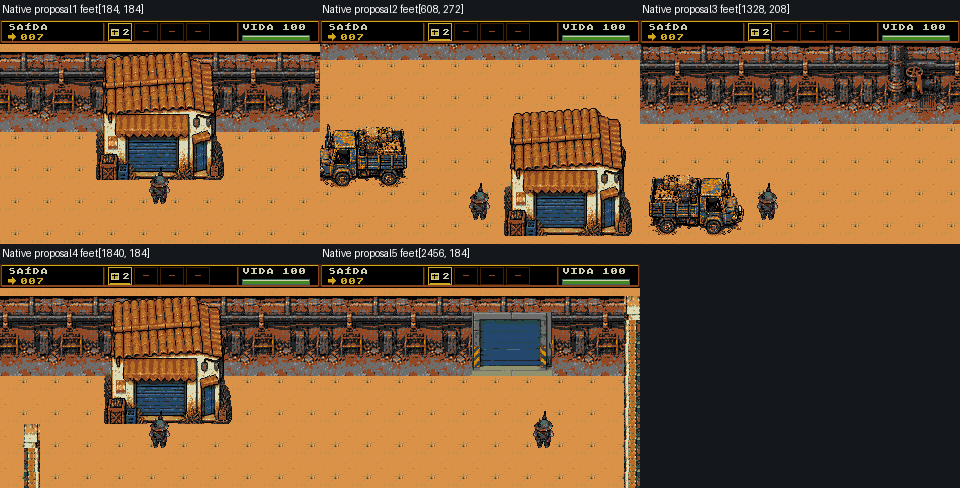

Fase9 · proposta isolada, revisão2
Candidata preparada para ensaio privado do root. Ainda não aprovada no runtime e não integra a ROM publicada. Reuso do kit existente: piso e contornos1px, oficinas completas, caminhões gastos, muro industrial do túnel04 e entrada exata das fases10/11.
630/640tiles por deduplicação exata H/V. Isso comprova memória, não qualidade visual. Diagnóstico e referências · Parecer/limites · Manifesto
Panorama inteiro em1x
Cinco câmeras320×224
Prévias compostas com o sprite/HUD existentes; não são capturas do emulador.

Geometria para o ensaio privado
Sólidos e percurso · C isolado opcional. Os sólidos correspondem aos muros/volumes visíveis. A rota tem8px de folga para pés16×16. Uma faixa traseira16px atrás da oficinaSul permanece visível fora da rota segura; não recebeu bloqueio invisível.
Ressalvas para revisão
- Composed native preview, not emulator frames.
- Geometria estática validada:6242posições físicas e5213posições com margem8 conectadas;24pontos,2815amostras. Ainda sem teste de controle/colisão/performance no emulador.
- Palette keeps all13colors of existing factory door exactly, adding the original church ochre floor colors in the two unused factory slots. No door pixel is recolored.
- No new bitmap artwork, no generated buildings, no2pxgrid or approximate tile substitutions.
- Three roofed workshop instances reuse one existing whole family; two trucks reuse one existing whole family. Repetition remains visible and must be judged on the complete panorama.
- The factory is represented by its rusty industrial perimeter and exact entrance. A distant towering factory silhouette is not newly invented from incompatible art.
- Player-camera compositions are previews with existing HUD/hero, not measurements from a running ROM.